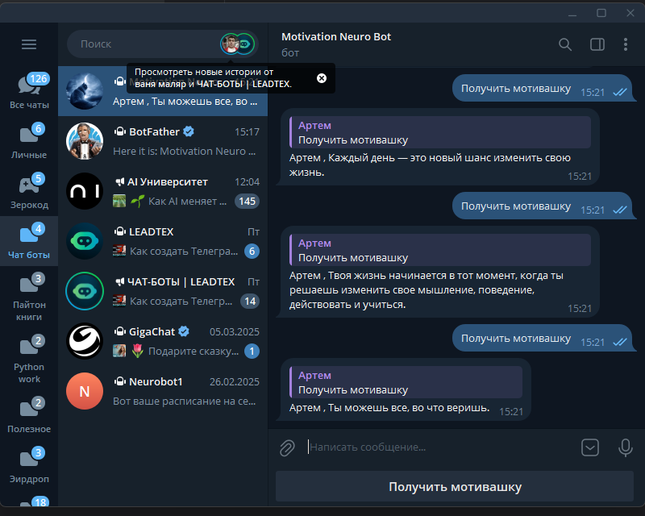
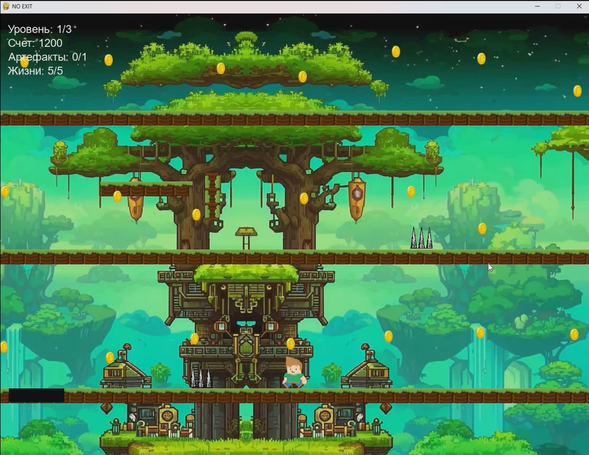
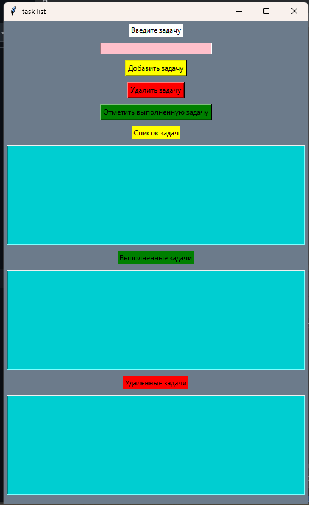
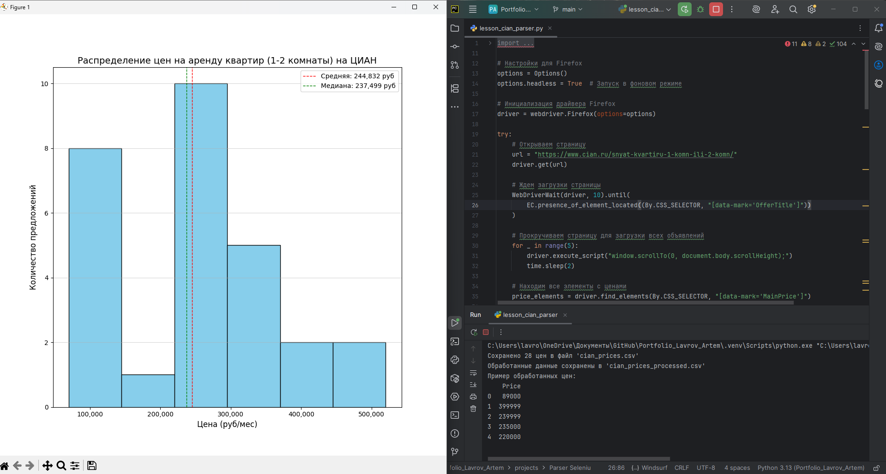

Я Python-разработчик с опытом создания desktop-приложений (Tkinter, PyGame), веб-решений (Flask, Django), чат-ботов (Telebot, Aiogram), а также парсеров данных (Selenium, Scrapy, Beautiful Soup) и работы с базами данных (SQL, MySQL, SQLite). Эффективно работаю с данными, используя Pandas и NumPy, а также разрабатываю backend для веб-приложений. Мои ключевые навыки: 🔹 Backend & Web: Разработка на Flask и Django (REST API, MVC, ORM, аутентификация) Создание ботов для Telegram (Telebot, Aiogram), интеграция сторонних API Работа с базами данных: SQL, MySQL, SQLite, оптимизация запросов 🔹 Automation & Parsing: Парсинг и сбор данных (Scrapy, BeautifulSoup, Selenium) Автоматизация процессов, скрипты для обработки данных 🔹 Desktop & GUI: Разработка приложений с графическим интерфейсом (Tkinter) Создание 2D-игр и интерактивных проектов (PyGame) 🔹 Data & Tools: Анализ и обработка данных (Pandas, NumPy) Базовый фронтенд (HTML), работа с веб-драйверами (Selenium) Контроль версий (Git), администрирование (Linux), Docker (базовый уровень) Почему стоит выбрать меня?✅ Полный цикл разработки – от проектирования до запуска ✅ Гибкость в технологиях – могу работать с разными стеками под задачи проекта ✅ Чистый и поддерживаемый код – соблюдаю лучшие практики (SOLID, DRY, PEP8) ✅ Ответственность и коммуникация – соблюдаю дедлайны, открыт к обсуждению идей Готов к сложным и интересным проектам! 🚀 📩 Свяжитесь со мной, и мы обсудим вашу задачу!
Python
HTML
CSS
MySQL, PostgreSQL
Git, Linux, Repl.it, PyCharm, GPT
Flask, requests, NumPy, Pandas, Pygame, Pillow, Django, Tkinter, Selenium, Scrapy, Mathplotlib
Web - разработка, разработка чат ботов на Python, No-code разработка чат-ботов на Leadteh
NeuroBot1 — это инновационный чат-бот, созданный для поддержания вашей мотивации и духа на высоком уровне. С его помощью вы сможете:
NeuroBot1 — это ваш надежный помощник на пути к успеху и саморазвитию. Подключайтесь и начните свой день с заряда позитива и вдохновения!
Игра разработана в командной разработке в целях закрепления навыков программирования с использованием библиотеки Pygame и основных алгоритмов Объектно ориентированного программирования и SOLID принципов. Игра представляет собой 2D-платформер с тремя уровнями разными по сложности и интересным сюжетом.
Учебный проект предназначен для записи и редактирования любых повседневных задач и целей. Своего рода Блокнот.
Описание: - Учебный проект для сбора и анализа данных о ценах на аренду 1-2 комнатных квартир
Технологии: - Python (Selenium, Pandas, Matplotlib, NumPy)
Функционал:
Результат: - Автоматизированный сбор цен, CSV-отчеты и график распределения.
Цель проекта: - Демонстрация навыков веб-скрапинга и анализа данных на реальном примере.
Артем Лавров
e-mail: lavrovartem0511@gmail.com
Git: Crowley55555
Мое портфолио на Git: Portfilio Lavrov Artem
LinkedIn: [ссылка]